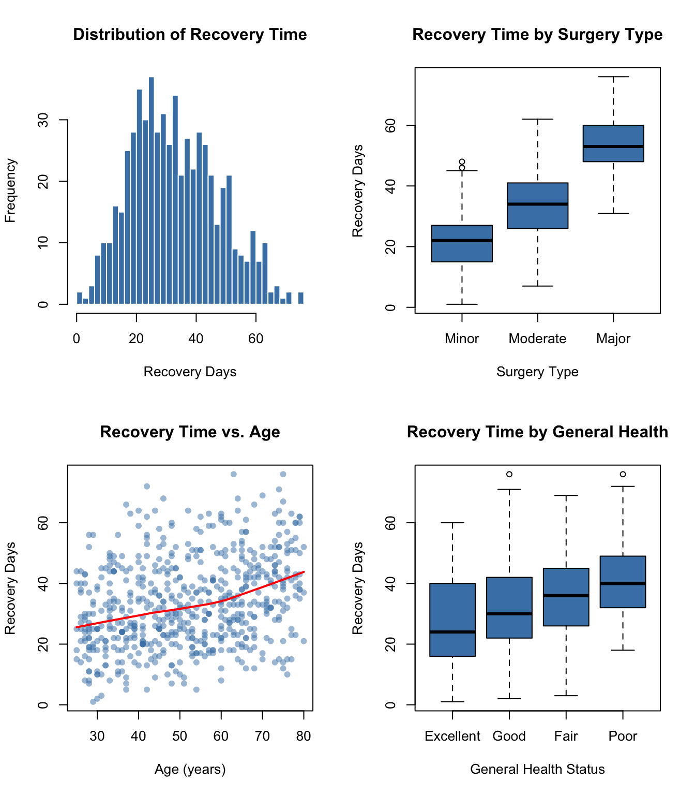

# Install required packages if needed
required_packages <- c("rpart", "rpart.plot", "dplyr", "ggplot2")
new_packages <- required_packages[!(required_packages %in% installed.packages()[,"Package"])]
if(length(new_packages)) install.packages(new_packages)
library(rpart)
library(rpart.plot)
library(dplyr)
library(ggplot2)
set.seed(2026)Decision Trees for Healthcare Prediction (Practice Workbook)
Regression Trees with R
1 Introduction
1.1 Recap: Decision (Regression) Trees
In the lecture, you learned about regression trees: a powerful prediction method that works differently from traditional regression. Instead of fitting equations with coefficients, regression trees:
- Divide patients into groups based on their characteristics
- Make predictions by averaging outcomes within each group
- Discover complex patterns and interactions
- Create visual decision rules that are easy to explain
The key concepts you learned include:
1. Recursive Partitioning: The algorithm repeatedly splits data into smaller groups, choosing splits that make predictions more accurate.
2. Tree Complexity:
- Too large → overfitting (memorizes training data, poor on new patients)
- Too small → underfitting (misses important patterns)
- Just right → captures real patterns without memorizing noise
3. Cross-Validation and Pruning: We use cross-validation on training data to find the optimal tree size, then prune the tree to that size.
4. The Complexity Parameter (cp): Controls how aggressively we prune the tree. Lower cp = larger trees; higher cp = smaller trees.
1.2 What You’ll Do in This Workbook
In this workbook, you’ll work through a practice activity where you apply regression tree methods to a new healthcare scenario. This hands-on practice will help solidify your understanding of:
- How to prepare data for tree modeling
- How to build, prune, and visualize regression trees
- How to evaluate tree performance
- When regression trees outperform linear regression
The Activity: Predicting Post-Surgical Recovery Time
You’ll help a hospital’s surgical department predict how many days patients will need to fully recover after surgery. Using patient information available before surgery, you’ll build regression tree models to support:
- Pre-surgery patient counseling about expected recovery
- Discharge planning and follow-up scheduling
- Identifying patients who may need extra support during recovery
Each section includes starter code with blanks (indicated by ___ or # FILL IN) for you to complete. Try to work through the tasks on your own first, referring back to the lecture notes when needed.
2 Post-Surgical Recovery Time Prediction
2.1 Background and Context
The Business Problem:
You work with the surgical services team at Regional Medical Center, a 300-bed hospital that performs approximately 8,000 surgeries per year. The surgical department faces several challenges related to patient recovery planning:
Current Challenges:
Patient expectations: Many patients ask “How long until I’m back to normal?” but estimates are often vague or inaccurate
Resource planning: The hospital needs to schedule follow-up appointments and rehabilitation services, but doesn’t know which patients will need them most
Support services: Some patients recover quickly at home, while others struggle and may need extra help (home health visits, physical therapy, support calls)
Patient satisfaction: When recovery takes longer than expected, patients feel frustrated and may give poor satisfaction scores
The Opportunity:
If you could accurately predict recovery time before surgery using information already collected during pre-surgery assessment, the hospital could:
- Give patients realistic expectations about their recovery timeline
- Proactively schedule follow-up care for patients expected to have longer recovery
- Identify patients who may benefit from extra support resources
- Improve patient satisfaction by setting appropriate expectations
Your Task:
Using historical data from past surgical patients, you’ll build a regression tree model to predict recovery time (measured in days until patient returns to normal activities). You’ll compare the tree model to traditional linear regression and make recommendations about which approach the hospital should implement.
2.2 Activity Overview
You’ll complete the following tasks:
Part 1: Data Preparation
- Load required R packages
- Load and explore the surgical recovery dataset
- Split into training and test sets
- Understand the variables available for prediction
Part 2: Building Your First Regression Tree
- Fit a basic regression tree
- Visualize and interpret the tree structure
- Make predictions for example patients
Part 3: Controlling Tree Complexity
- Build trees with different complexity parameters
- Understand the relationship between cp and tree size
- Visualize how complexity affects the tree
Part 4: Cross-Validation and Optimal Pruning
- Examine cross-validation results
- Find the optimal complexity parameter value
- Prune the tree to optimal complexity
Part 5: Model Evaluation
- Evaluate regression tree performance on test data by checking RMSE and R-squared
- Visualize predictions vs. actual outcomes
2.3 Part 1: Data Preparation
2.3.1 The Surgical Recovery Dataset
Before starting to create the dataset, let’s load the required packages:
This dataset contains information from 600 patients who underwent surgery in the past year. For each patient, we have information collected before surgery and the actual recovery time measured after surgery.
Run the code below to generate the surgical recovery data:
# Generate surgical recovery dataset
n <- 600
recovery_data <- data.frame(
# Patient demographics
age = round(runif(n, 25, 80)),
is_male = rbinom(n, 1, 0.52),
# Surgery characteristics
surgery_type = sample(c("Minor", "Moderate", "Major"), n,
replace = TRUE, prob = c(0.35, 0.45, 0.20)),
# Pre-surgery health status
general_health = sample(c("Excellent", "Good", "Fair", "Poor"), n,
replace = TRUE, prob = c(0.20, 0.45, 0.25, 0.10)),
has_diabetes = rbinom(n, 1, 0.15),
has_heart_condition = rbinom(n, 1, 0.12),
has_lung_condition = rbinom(n, 1, 0.10),
# Lifestyle factors
smoker = rbinom(n, 1, 0.18),
regular_exercise = rbinom(n, 1, 0.42),
# Support system
lives_alone = rbinom(n, 1, 0.28),
has_caregiver = rbinom(n, 1, 0.65)
)
# Make some realistic correlations
recovery_data <- recovery_data %>%
mutate(
# Older patients more likely to have conditions
has_diabetes = ifelse(age > 60 & runif(n) < 0.3, 1, has_diabetes),
has_heart_condition = ifelse(age > 65 & runif(n) < 0.25, 1, has_heart_condition),
# People with conditions less likely to exercise
regular_exercise = ifelse((has_diabetes == 1 | has_heart_condition == 1) &
runif(n) < 0.4, 0, regular_exercise)
)
# Generate recovery time (days until return to normal activities)
# Simpler relationships that allow moderate tree size to work well
recovery_data <- recovery_data %>%
mutate(
# Base recovery time by surgery type (main driver)
base_days = case_when(
surgery_type == "Minor" ~ 8,
surgery_type == "Moderate" ~ 20,
surgery_type == "Major" ~ 40
),
# Simple linear age effect (no acceleration)
age_effect = 0.2 * age,
# Health status effect
health_effect = case_when(
general_health == "Excellent" ~ -4,
general_health == "Good" ~ 0,
general_health == "Fair" ~ 6,
general_health == "Poor" ~ 12
),
# Medical conditions (simple additive effects, no interactions)
condition_effect = 4 * has_diabetes +
5 * has_heart_condition +
3 * has_lung_condition,
# Lifestyle factors (simplified)
lifestyle_effect = 4 * smoker - 3 * regular_exercise,
# Support system (simple additive effects, no interactions)
support_effect = 3 * lives_alone - 2 * has_caregiver,
# Combine all effects with moderate random variation
expected_recovery = base_days + age_effect + health_effect +
condition_effect + lifestyle_effect + support_effect,
recovery_days = round(pmax(1, expected_recovery + rnorm(n, 0, 6)))
) %>%
# Keep only the original variables and outcome
select(age, is_male, surgery_type, general_health, has_diabetes,
has_heart_condition, has_lung_condition, smoker, regular_exercise,
lives_alone, has_caregiver, recovery_days)
# Convert categorical variables to factors
recovery_data <- recovery_data %>%
mutate(
is_male = factor(is_male, labels = c("Female", "Male")),
surgery_type = factor(surgery_type, levels = c("Minor", "Moderate", "Major")),
general_health = factor(general_health, levels = c("Excellent", "Good", "Fair", "Poor")),
has_diabetes = factor(has_diabetes, labels = c("No", "Yes")),
has_heart_condition = factor(has_heart_condition, labels = c("No", "Yes")),
has_lung_condition = factor(has_lung_condition, labels = c("No", "Yes")),
smoker = factor(smoker, labels = c("No", "Yes")),
regular_exercise = factor(regular_exercise, labels = c("No", "Yes")),
lives_alone = factor(lives_alone, labels = c("No", "Yes")),
has_caregiver = factor(has_caregiver, labels = c("No", "Yes"))
)
# Display first few rows
head(recovery_data, 10) age is_male surgery_type general_health has_diabetes has_heart_condition
1 63 Male Major Fair No No
2 56 Female Moderate Good No Yes
3 33 Male Moderate Good No No
4 41 Female Moderate Good No No
5 56 Male Minor Good No No
6 26 Male Minor Good No No
7 51 Female Minor Excellent No No
8 72 Female Minor Poor Yes Yes
9 39 Male Moderate Excellent No No
10 57 Female Moderate Excellent No No
has_lung_condition smoker regular_exercise lives_alone has_caregiver
1 No No Yes No Yes
2 No No No No Yes
3 No No No Yes Yes
4 No No No No Yes
5 No Yes No Yes No
6 No No No Yes Yes
7 No No Yes No Yes
8 No No No No No
9 Yes No No No Yes
10 Yes Yes Yes No Yes
recovery_days
1 51
2 28
3 25
4 23
5 22
6 14
7 9
8 48
9 26
10 34Variable Descriptions:
Patient Demographics:
age: Patient age in yearsis_male: Gender (Female or Male)
Surgery Characteristics:
surgery_type: Type of surgery (Minor, Moderate, or Major)
Pre-Surgery Health Status:
general_health: Self-reported overall health (Excellent, Good, Fair, Poor)has_diabetes: Patient has diabetes (Yes/No)has_heart_condition: Patient has a heart condition (Yes/No)has_lung_condition: Patient has a lung/breathing condition (Yes/No)
Lifestyle Factors:
smoker: Current smoker (Yes/No)regular_exercise: Exercises regularly (Yes/No)
Support System:
lives_alone: Lives alone without family (Yes/No)has_caregiver: Has someone to help during recovery (Yes/No)
Outcome Variable:
recovery_days: Days until patient returned to normal activities
Dataset Summary:
Surgical Recovery Dataset==========================Total patients: 600 Number of predictors: 11 Recovery Time Statistics: Mean: 33.5 days Median: 32 days Range: 1 - 76 days Std Dev: 14.6 daysSurgery Type Distribution:
Minor Moderate Major
200 286 114 2.3.2 Exploratory Visualization
Let’s examine how recovery time relates to key variables:
par(mfrow = c(2, 2))
# Recovery time distribution
hist(recovery_data$recovery_days, breaks = 30,
main = "Distribution of Recovery Time",
xlab = "Recovery Days", col = "steelblue", border = "white")
# Recovery by surgery type
boxplot(recovery_days ~ surgery_type, data = recovery_data,
main = "Recovery Time by Surgery Type",
xlab = "Surgery Type", ylab = "Recovery Days",
col = "steelblue")
# Recovery by age
plot(recovery_data$age, recovery_data$recovery_days,
main = "Recovery Time vs. Age",
xlab = "Age (years)", ylab = "Recovery Days",
col = adjustcolor("steelblue", 0.5), pch = 16)
lines(lowess(recovery_data$age, recovery_data$recovery_days),
col = "red", lwd = 2)
# Recovery by general health
boxplot(recovery_days ~ general_health, data = recovery_data,
main = "Recovery Time by General Health",
xlab = "General Health Status", ylab = "Recovery Days",
col = "steelblue")
Key Observations:
- Surgery type clearly matters: Major surgeries take much longer to recover from than minor ones
- Age shows a relationship: Older patients tend to take longer to recover
- Health status is important: Patients in poor health take longer to recover
- Lots of variation exists: Even within groups, recovery times vary considerably
Now let’s prepare the data for modeling!
2.3.3 Task 1: Split Data into Training and Test Sets
We’ll use a 70-30 split, with 70% of data for training (building the tree) and 30% for testing (evaluating performance).
# Set seed for reproducibility
set.seed(2026)
# Create training and test indices
# FILL IN: Sample 70% of row numbers for training
train_idx <- sample(1:nrow(recovery_data), ___ * nrow(recovery_data))
# FILL IN: Create training dataset using the indices
train_data <- recovery_data[___, ]
# FILL IN: Create test dataset using the remaining indices
test_data <- recovery_data[___, ]
# Display the split sizes
cat("Training set:", nrow(train_data), "patients\n")
cat("Test set:", nrow(test_data), "patients\n")Hint: Use train_idx to select rows for training, and -train_idx for test.
2.4 Part 2: Building Your First Regression Tree
Now let’s build a basic regression tree using the rpart() function. This function works similarly to lm() for linear regression.
2.4.1 Task 2: Fit a Basic Regression Tree
# Build a regression tree with default settings
# FILL IN: Complete the rpart() function
basic_tree <- rpart(
# Formula: predict recovery_days using all other variables
formula = recovery_days ~ ___,
# Which dataset to use
data = ___,
# method = "anova" means we're predicting a continuous outcome
method = "___"
)
# Display the tree structure (text format)
print(basic_tree)Hint: Use recovery_days ~ . to include all predictors. The dataset should be train_data, and method should be "anova" for regression.
2.4.2 Task 3: Visualize and Interpret the Tree
Now let’s create a visual diagram of the tree using rpart.plot():
# Create a tree diagram
# FILL IN: Complete the rpart.plot() function
rpart.plot(
___, # The tree object to plot
type = 4, # Show variable names and split rules
extra = 101, # Show number and % of observations
under = TRUE, # Put counts under the boxes
fallen.leaves = TRUE, # Align terminal nodes at bottom
box.palette = "Blues", # Color scheme
main = "Post-Surgical Recovery Prediction Tree",
cex = 0.8, # Text size
roundint = TRUE # Round numbers to integers
)
# Count the terminal nodes (leaves)
n_leaves <- sum(basic_tree$frame$var == "<leaf>")
cat("\nNumber of terminal nodes:", n_leaves, "\n")Interpretation Exercise:
Look at your tree diagram and answer these questions:
What is the first split? Which variable does the tree consider most important?
Find a high-risk path: Trace a path from top to bottom that leads to the longest predicted recovery time. What characteristics define this patient group?
Find a low-risk path: Trace a path that leads to the shortest predicted recovery time. What characteristics define this group?
2.4.3 Task 4: Make Predictions for an Example Patient
Let’s use the tree to predict recovery time for a specific patient. Here are all the characteristics we know about this patient before surgery:
Example Patient: Older Adult with Major Surgery and Multiple Risk Factors
- Age: 72 years old
- Gender: Female
- Surgery Type: Major surgery
- General Health: Fair (self-reported)
- Diabetes: Yes
- Heart Condition: Yes
- Lung/Breathing Condition: No
- Current Smoker: No
- Regular Exercise: No
- Lives Alone: Yes (no family at home)
- Has Caregiver: Yes (someone will help during recovery)
This patient represents a higher-risk scenario with multiple factors that could affect recovery. Let’s see what the tree predicts for her recovery time:
# Create the example patient with all 11 predictor variables
example_patient <- data.frame(
# Demographics (2 variables)
age = 72,
is_male = factor("Female", levels = levels(train_data$is_male)),
# Surgery characteristics (1 variable)
surgery_type = factor("Major", levels = levels(train_data$surgery_type)),
# Pre-surgery health status (4 variables)
general_health = factor("Fair", levels = levels(train_data$general_health)),
has_diabetes = factor("Yes", levels = levels(train_data$has_diabetes)),
has_heart_condition = factor("Yes", levels = levels(train_data$has_heart_condition)),
has_lung_condition = factor("No", levels = levels(train_data$has_lung_condition)),
# Lifestyle factors (2 variables)
smoker = factor("No", levels = levels(train_data$smoker)),
regular_exercise = factor("No", levels = levels(train_data$regular_exercise)),
# Support system (2 variables)
lives_alone = factor("Yes", levels = levels(train_data$lives_alone)),
has_caregiver = factor("Yes", levels = levels(train_data$has_caregiver))
)
# FILL IN: Make prediction using the predict() function
prediction <- predict(___, ___)
cat("→ PREDICTED RECOVERY TIME:", round(prediction), "days\n")Hint: Use predict(basic_tree, example_patient) (note: singular, not plural).
Try to compare the calculated result with the tree diagram above.
2.5 Part 3: Controlling Tree Complexity
The basic tree we built uses default settings. But we can control how complex the tree grows using the complexity parameter (cp).
Remember from lecture:
- Lower cp → tree can make more splits → larger, more complex trees
- Higher cp → tree makes fewer splits → smaller, simpler trees
2.5.1 Task 5: Build Trees with Different cp Values
Let’s build several trees with different cp values to see how complexity changes:
# We'll try 4 different cp values
cp_values <- c(0.1, 0.03, 0.01, 0.001)
# Set up a 2x2 plotting area
par(mfrow = c(2, 2))
# FILL IN: Complete the loop to build and visualize trees
for (cp_val in cp_values) {
# Build tree with this cp value
tree_temp <- rpart(
recovery_days ~ .,
data = train_data,
method = "anova",
control = rpart.control(cp = ___) # Use cp_val here
)
# Count terminal nodes
n_leaves <- sum(tree_temp$frame$var == "<leaf>")
# Visualize
rpart.plot(tree_temp,
main = paste0("cp = ", cp_val, " (", n_leaves, " leaves)"),
type = 4,
extra = 101,
cex = 0.6,
roundint = TRUE)
}
par(mfrow = c(1, 1))Observation Questions:
- What happens to the tree as cp decreases?
- Which tree looks too simple (might be underfitting)?
- Which tree looks too complex (might be overfitting)?
2.6 Part 4: Cross-Validation and Optimal Pruning
How do we find the “just right” tree size? We use cross-validation!
Good news: rpart() automatically performs 10-fold cross-validation when you fit a tree. The results are stored in the tree’s $cptable (complexity parameter table).
2.6.1 Task 6: Examine the Cross-Validation Results
First, let’s build a large tree (with small cp) so we can prune it back:
# Build a large tree
# FILL IN: Build tree with cp = 0.001 to allow it to grow large
large_tree <- rpart(
recovery_days ~ .,
data = ___,
method = "anova",
control = rpart.control(cp = ___) # Use a small cp
)
# Look at the cross-validation table
# FILL IN: Display the cptable
print(large_tree$___)Hint: The cptable is stored in large_tree$cptable.
Understanding the output: Each row represents a different tree size. The xerror column shows how well each tree performs on cross-validation folds - lower is better!
2.6.2 Task 7: Find the Optimal Complexity Parameter Value
We want the cp value that gives the lowest cross-validation error (xerror):
# Visualize the cross-validation results
plotcp(___) # FILL IN: Plot the cp table
# FILL IN: Find the cp value with minimum cross-validation error
cp_table <- large_tree$cptable
# Which row has the minimum xerror?
best_row <- which.min(cp_table[, "___"]) # FILL IN: column name
# Extract the cp value from that row
optimal_cp <- cp_table[best_row, "___"] # FILL IN: column name
cat("\nOptimal complexity parameter:", optimal_cp, "\n")
cat("This corresponds to", cp_table[best_row, "nsplit"], "splits\n")Hint: Look for the "xerror" and "CP" columns in cp_table.
2.6.3 Task 8: Prune to Optimal Size
Now let’s prune our large tree back to the optimal size:
# FILL IN: Prune the tree using the prune() function
pruned_tree <- prune(___, cp = ___)
# Visualize the pruned tree
rpart.plot(
pruned_tree,
type = 4,
extra = 101,
under = TRUE,
fallen.leaves = TRUE,
box.palette = "Greens",
main = paste0("Optimally Pruned Tree (cp = ", round(optimal_cp, 4), ")"),
cex = 0.8,
roundint = TRUE
)
# Compare sizes
n_leaves_large <- sum(large_tree$frame$var == "<leaf>")
n_leaves_pruned <- sum(pruned_tree$frame$var == "<leaf>")
cat("\nTree Size Comparison:\n")
cat(" Before pruning:", n_leaves_large, "leaves\n")
cat(" After pruning:", n_leaves_pruned, "leaves\n")Hint: Use prune(large_tree, cp = optimal_cp).
2.7 Part 5: Model Evaluation
Now let’s see how well our optimally-pruned tree performs on the test set (data it has never seen before).
2.7.1 Task 9: Evaluate Tree Performance on Test Set
# FILL IN: Make predictions on test set
test_predictions <- predict(___, ___)
# Extract actual recovery days from test set
actual_recovery <- test_data$recovery_days
# FILL IN: Calculate Root Mean Squared Error (RMSE)
squared_errors <- (actual_recovery - ___)^2
mse <- mean(___)
rmse_tree <- sqrt(___)
# FILL IN: Calculate R-squared
ss_residual <- sum((actual_recovery - ___)^2)
ss_total <- sum((actual_recovery - mean(___))^2)
r_squared_tree <- 1 - (ss_residual / ___)
cat("Regression Tree Test Performance:\n")
cat("==================================\n")
cat("RMSE:", round(rmse_tree, 2), "days\n")
cat("R-squared:", round(r_squared_tree, 3), "\n\n")
cat("Interpretation:\n")
cat(" On average, predictions are off by", round(rmse_tree, 1), "days\n")
cat(" The model explains", round(r_squared_tree * 100, 2),
"% of variation in recovery time\n")Hint: - Predictions: predict(pruned_tree, test_data) - RMSE formula: sqrt(mean((actual - predicted)^2)) - R² formula: 1 - (SS_residual / SS_total)
2.7.2 Task 10: Visualize Predictions vs. Actual
Let’s visualize how well the model predictions match the actual recovery times:
# Create scatter plot of predictions vs actual
plot(actual_recovery, test_predictions,
main = "Regression Tree: Predictions vs. Actual",
xlab = "Actual Recovery Days",
ylab = "Predicted Recovery Days",
col = adjustcolor("steelblue", 0.6),
pch = 16)
# Add perfect prediction line
abline(0, 1, col = "red", lwd = 2, lty = 2)
# Add legend
legend("topleft",
legend = "Perfect predictions",
col = "red", lty = 2, lwd = 2)Interpretation: Points closer to the red dashed line represent better predictions. Points above the line indicate over-predictions (model predicts longer recovery than actual), while points below indicate under-predictions.
TipClick for Complete Solutions
# =============================================================================
# TASK 1: SPLIT DATA INTO TRAINING AND TEST SETS
# =============================================================================
set.seed(2026)
train_idx <- sample(1:nrow(recovery_data), 0.7 * nrow(recovery_data))
train_data <- recovery_data[train_idx, ]
test_data <- recovery_data[-train_idx, ]
cat("Training set:", nrow(train_data), "patients\n")
cat("Test set:", nrow(test_data), "patients\n")
# =============================================================================
# TASK 2: FIT A BASIC REGRESSION TREE
# =============================================================================
basic_tree <- rpart(
formula = recovery_days ~ .,
data = train_data,
method = "anova"
)
print(basic_tree)
# =============================================================================
# TASK 3: VISUALIZE AND INTERPRET THE TREE
# =============================================================================
rpart.plot(
basic_tree,
type = 4,
extra = 101,
under = TRUE,
fallen.leaves = TRUE,
box.palette = "Blues",
main = "Post-Surgical Recovery Prediction Tree",
cex = 0.8,
roundint = TRUE
)
n_leaves <- sum(basic_tree$frame$var == "<leaf>")
cat("\nNumber of terminal nodes:", n_leaves, "\n")
# =============================================================================
# TASK 4: MAKE PREDICTION FOR EXAMPLE PATIENT
# =============================================================================
# Create the example patient with all 11 predictor variables
example_patient <- data.frame(
# Demographics (2 variables)
age = 72,
is_male = factor("Female", levels = levels(train_data$is_male)),
# Surgery characteristics (1 variable)
surgery_type = factor("Major", levels = levels(train_data$surgery_type)),
# Pre-surgery health status (4 variables)
general_health = factor("Fair", levels = levels(train_data$general_health)),
has_diabetes = factor("Yes", levels = levels(train_data$has_diabetes)),
has_heart_condition = factor("Yes", levels = levels(train_data$has_heart_condition)),
has_lung_condition = factor("No", levels = levels(train_data$has_lung_condition)),
# Lifestyle factors (2 variables)
smoker = factor("No", levels = levels(train_data$smoker)),
regular_exercise = factor("No", levels = levels(train_data$regular_exercise)),
# Support system (2 variables)
lives_alone = factor("Yes", levels = levels(train_data$lives_alone)),
has_caregiver = factor("Yes", levels = levels(train_data$has_caregiver))
)
# Make prediction
prediction <- predict(basic_tree, example_patient)
cat("→ PREDICTED RECOVERY TIME:", round(prediction), "days\n")
# =============================================================================
# TASK 5: BUILD TREES WITH DIFFERENT CP VALUES
# =============================================================================
cp_values <- c(0.1, 0.03, 0.01, 0.001)
par(mfrow = c(2, 2))
for (cp_val in cp_values) {
tree_temp <- rpart(
recovery_days ~ .,
data = train_data,
method = "anova",
control = rpart.control(cp = cp_val)
)
n_leaves <- sum(tree_temp$frame$var == "<leaf>")
rpart.plot(tree_temp,
main = paste0("cp = ", cp_val, " (", n_leaves, " leaves)"),
type = 4,
extra = 101,
cex = 0.6,
roundint = TRUE)
}
par(mfrow = c(1, 1))
# =============================================================================
# TASK 6: EXAMINE THE CROSS-VALIDATION RESULTS
# =============================================================================
large_tree <- rpart(
recovery_days ~ .,
data = train_data,
method = "anova",
control = rpart.control(cp = 0.001)
)
print(large_tree$cptable)
# =============================================================================
# TASK 7: FIND THE OPTIMAL Complexity Parameter
# =============================================================================
plotcp(large_tree)
cp_table <- large_tree$cptable
best_row <- which.min(cp_table[, "xerror"])
optimal_cp <- cp_table[best_row, "CP"]
cat("\nOptimal complexity parameter:", optimal_cp, "\n")
cat("This corresponds to", cp_table[best_row, "nsplit"], "splits\n")
# =============================================================================
# TASK 8: PRUNE TO OPTIMAL SIZE
# =============================================================================
pruned_tree <- prune(large_tree, cp = optimal_cp)
rpart.plot(
pruned_tree,
type = 4,
extra = 101,
under = TRUE,
fallen.leaves = TRUE,
box.palette = "Greens",
main = paste0("Optimally Pruned Tree (cp = ", round(optimal_cp, 4), ")"),
cex = 0.8,
roundint = TRUE
)
n_leaves_large <- sum(large_tree$frame$var == "<leaf>")
n_leaves_pruned <- sum(pruned_tree$frame$var == "<leaf>")
cat("\nTree Size Comparison:\n")
cat(" Before pruning:", n_leaves_large, "leaves\n")
cat(" After pruning:", n_leaves_pruned, "leaves\n")
# =============================================================================
# TASK 9: EVALUATE TREE PERFORMANCE ON TEST SET
# =============================================================================
test_predictions <- predict(pruned_tree, test_data)
actual_recovery <- test_data$recovery_days
squared_errors <- (actual_recovery - test_predictions)^2
mse <- mean(squared_errors)
rmse_tree <- sqrt(mse)
ss_residual <- sum((actual_recovery - test_predictions)^2)
ss_total <- sum((actual_recovery - mean(actual_recovery))^2)
r_squared_tree <- 1 - (ss_residual / ss_total)
cat("Regression Tree Test Performance:\n")
cat("==================================\n")
cat("RMSE:", round(rmse_tree, 2), "days\n")
cat("R-squared:", round(r_squared_tree, 3), "\n\n")
cat("Interpretation:\n")
cat(" On average, predictions are off by", round(rmse_tree, 1), "days\n")
cat(" The model explains", round(r_squared_tree * 100, 2),
"% of variation in recovery time\n")
# =============================================================================
# TASK 10: VISUALIZE PREDICTIONS VS. ACTUAL
# =============================================================================
# Create scatter plot of predictions vs actual
plot(actual_recovery, test_predictions,
main = "Regression Tree: Predictions vs. Actual",
xlab = "Actual Recovery Days",
ylab = "Predicted Recovery Days",
col = adjustcolor("steelblue", 0.6),
pch = 16)
# Add perfect prediction line
abline(0, 1, col = "red", lwd = 2, lty = 2)
# Add legend
legend("topleft",
legend = "Perfect predictions",
col = "red", lty = 2, lwd = 2)2.8 Practice Makes Perfect
The best way to solidify your understanding is to:
- Try the code yourself: Don’t just read the solutions—type the code and experiment
- Modify parameters: Change cp values, try different variables, see what happens
- Apply to new data: Find another dataset and build your own regression tree
- Explain to others: Teaching someone else is the best way to learn
Great work completing this practice workbook!
3 References
3.1 Primary Sources
This practice workbook was developed using concepts and methods from:
UC Business Analytics R Programming Guide: Regression Trees - Comprehensive tutorial on CART implementation in R
James, et. al. (2021). An Introduction to Statistical Learning with Applications in R (2nd ed.). Springer. Chapter 8: Tree-Based Methods. [Available at www.statlearning.com]
Etzioni, et. al. (2020). Statistics for Health Data Science. Springer. Chapter 10: Tree-based prediction methods
3.2 Motivated Example
The post-surgical recovery prediction scenario was inspired by:
- Edelstein, A. I., et al. (2017). Can the American College of Surgeons Risk Calculator predict 30-day complications after knee and hip arthroplasty? The Journal of Arthroplasty, 32(5), 1423-1427.
3.3 R Package Documentation
- rpart package: Recursive Partitioning and Regression Trees
- https://cran.r-project.org/web/packages/rpart/rpart.pdf
- Therneau, T., & Atkinson, B. (2022). rpart: Recursive Partitioning and Regression Trees.
- rpart.plot package: Enhanced tree visualization
- http://www.milbo.org/rpart-plot/
- Milborrow, S. (2022). rpart.plot: Plot ‘rpart’ Models